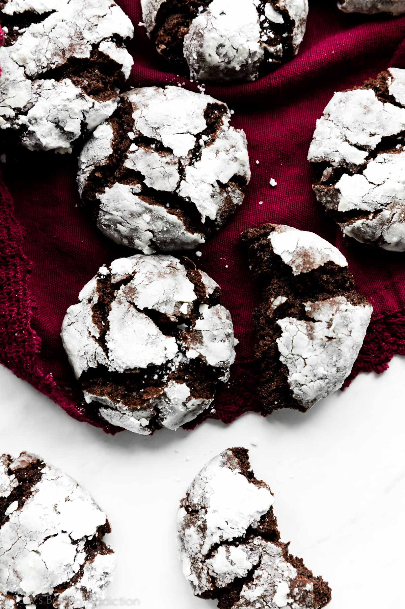

Double Chocolate Crinkle Cookies

Ingredients
- 1/2 cup (8 Tbsp; 113g) unsalted butter, softened to room temperature
- 1/2 cup (100g) granulated sugar
- 1/2 cup (100g) packed light or dark brown sugar
- 1 large egg, at room temperature
- 1 teaspoon pure vanilla extract
- 1 cup (125g) all-purpose flour (spooned & leveled)
- 1/2 cup + 2 Tablespoons (51g) unsweetened natural cocoa powder
- 1 teaspoon baking soda
- 1/8 teaspoon salt
- 1 cup (180g) mini or regular size semi-sweet chocolate chips
Rolling
- 3 Tablespoons (35g) granulated sugar
- 1 cup (120g) confectioners’ sugar, for rolling
Instructions
- In a large bowl using a handheld or stand mixer fitted with a paddle attachment, beat the butter, granulated sugar, and brown sugar together on medium high speed until fluffy and light in color, about 2-3 minutes. Add the egg and vanilla extract, and then beat on high speed until combined. Scrape down the sides and bottom of the bowl as needed.
- In a separate bowl, whisk the flour, cocoa powder, baking soda, and salt together until combined. With the mixer running on low speed, slowly pour into the wet ingredients. Beat on low until combined and then beat in the chocolate chips. The cookie dough will be thick and very sticky. Cover dough tightly and chill in the refrigerator for at least 3 hours and up to 3 days. Chilling is mandatory for this sticky cookie dough.
- Remove cookie dough from the refrigerator and allow to sit at room temperature for 10 minutes. If the cookie dough chilled longer than 3 hours, let it sit at room temperature for about 20 minutes. This makes the chilled cookie dough easier to scoop and roll.
- Preheat oven to 350°F (177°C). Line large baking sheets with parchment paper or silicone baking mats. (Always recommended for cookies.) Set aside.
- Scoop and roll dough into balls, about 1.5 Tablespoons of dough each. A medium cookie scoop is helpful here. Roll each ball very lightly in granulated sugar, then generously in the confectioners’ sugar. Place 3 inches apart on the baking sheets.
- Bake the cookies for 11-12 minutes or until the edges appear set and the centers still look soft. Tip: If they aren’t really spreading by minute 9, remove them from the oven and lightly bang the baking sheet on the counter 2-3x. This helps initiate that spread. Return to the oven to continue baking.
- Cool cookies for 5 minutes on the baking sheet, and then transfer to a cooling rack to cool completely. The cookies will slightly deflate as they cool.
- Cookies stay fresh covered at room temperature for up to 1 week.